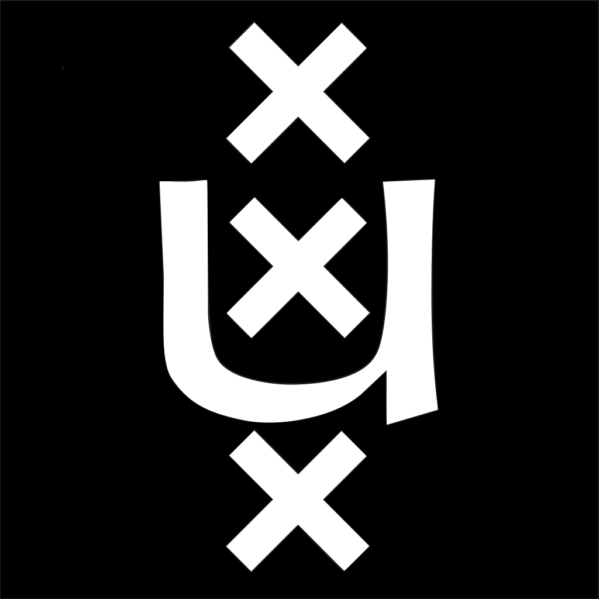

Welkom op de website die ik heb gemaakt voor het vak MMIO. Deze website heb ik kunnen bouwen door de vele technieken die ik bij MMIO heb geleerd en natuurlijk de programmeerkennis van het WebDB. De webiste is gebaseerd op een aantal ontwerpen die ik heb gemaakt voor het vak MMIO. Zo heb ik zowel ontwerpen uit de persoonlijke opdrachten als uit de eindopdracht gehaald. Voor meer informatie over de opdrachten die ik voor dit vak heb gemaakt kan je op de links in het navigatiemenu klikken
Dit was een heel ander vak dan de eerdere vakken van deze studie. Vooral het begin was erg chaotisch. Dit was vooral te danken aan de brede oprachten en het feit dat we net een heel ander vak hebben gehad. Naarmate het vak vorderde werd er wel duidelijk wat er verwacht werd van ons en toen eenmaal het eindproject was begonnen had ik het gevoel dat ik veel had geleerd. Hierdoor vond ik het echt leuk om me bezig te houden met het eindproject. Hier kon ik al mijn nieuwe kennis gebruiken.